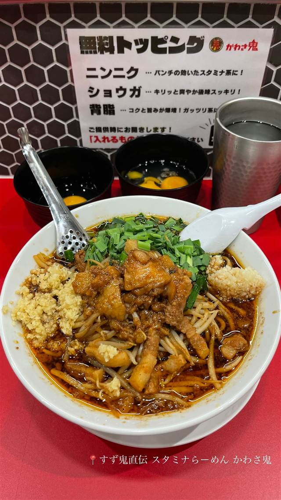

★ また行きたい醤油・中華そばで53位
すず鬼直伝 スタミナらーめん かわさ鬼
三鷹の人気店が手がけた初プロデュース店の極太麺ラーメン
かわさ鬼
三鷹の人気店「元祖スタミナ満点らーめん すず鬼」が初めて手がけたプロデュース店として2025年7月に川崎駅前にオープン。アリラン系と二郎系を掛け合わせた極太麺に、ニンニク・背脂を効かせたジャンクな一杯で連日行列ができている。
TRIVIA
豆知識
- 三鷹の名店「すず鬼」が初めて手がけたプロデュース店として2025年7月にオープン
- アリラン系と二郎系を掛け合わせた独自スタイルが由来
- ニンニク・ショウガ・背脂が無料トッピング
REVIEWS
世間の評判
91.5ラーメンDB3.58食べログ
ガツンと効く醤油だれとむちむち太麺
- ガツンとくるパンチ力のあるスープとむちむちの太麺を評価する声が多い
- 無料のニンニクや生姜、背脂といった薬味を楽しむ人が多いという声がある
- 食券の列と並ぶ列が分かれているなど並び方がやや分かりにくいと感じる人もいる
ラーメンデータベース 口コミ56件・最新 2026-08
| 創業 | 2025年7月22日開業 |
|---|---|
| 系譜 | 三鷹の人気店「元祖スタミナ満点らーめん すず鬼」が手がけた初のプロデュース店 |
| 看板 | 鬼ソバ（1000円）、火の玉（辛口・1100円） |
| こだわり | 極太のワシワシ麺と漆黒の濃い醤油スープ、ニンニク・ショウガ・背脂が無料トッピングという、アリラン系×二郎系を掛け合わせたハイブリッドスタイル |
| 掲載・評価 | 開業直後から連日行列ができる話題店として複数のグルメメディアで紹介 |
| どこから | 23区の外れ・近郊 |
| 行くなら | 行列 |
| 営業時間 | 月〜金 11:00-16:00、17:00-22:30 土・日 11:00-22:30 |
| 予算 | 夜 ¥1,000～¥1,999 |
| 場所 | 川崎駅・京急川崎駅 神奈川県川崎市川崎区小川町1-7 |
| メモ | タッチパネル式券売機で食券購入、現金のみ対応、開店前に食券を買って列に戻る案内あり |
食べたもの：スタミナらーめん
地図で見る店の情報ラーメンDBX（その日の営業）Instagram
NEARBY
近い店・同じ系統の店
-
 ★
醤油・中華そば 大口駅
中華そば 髙野
元美容師の店主が作る、昆布水に浸した自家製麺の中華そば
昼 ¥1,000～¥1,999 夜 ¥1,000～¥1,999
★
醤油・中華そば 大口駅
中華そば 髙野
元美容師の店主が作る、昆布水に浸した自家製麺の中華そば
昼 ¥1,000～¥1,999 夜 ¥1,000～¥1,999
-
 ★
醤油・中華そば 池尻大橋駅
八雲（やくも）
骨を一切使わないのに深いコクの特製ワンタン麺
昼 ¥501～¥1,000 夜 ¥501～¥1,000
★
醤油・中華そば 池尻大橋駅
八雲（やくも）
骨を一切使わないのに深いコクの特製ワンタン麺
昼 ¥501～¥1,000 夜 ¥501～¥1,000
-
 ★
醤油・中華そば 六本木駅
入鹿TOKYO 六本木店
鶏・豚・貝・海老を別々に炊く独自のカルテットスープ
昼 ¥1,000～¥1,999 夜 ¥1,000～¥1,999
★
醤油・中華そば 六本木駅
入鹿TOKYO 六本木店
鶏・豚・貝・海老を別々に炊く独自のカルテットスープ
昼 ¥1,000～¥1,999 夜 ¥1,000～¥1,999
-
 ★
醤油・中華そば 千歳船橋
中華そば 西川
永福町大勝軒などで8年修行した店主の煮干しそば、百名店5年連続
昼 ¥1,000～¥1,999 夜 ¥1,000～¥1,999
★
醤油・中華そば 千歳船橋
中華そば 西川
永福町大勝軒などで8年修行した店主の煮干しそば、百名店5年連続
昼 ¥1,000～¥1,999 夜 ¥1,000～¥1,999
-
 ★
醤油・中華そば 祖師ヶ谷大蔵駅
世田谷中華そば 祖師谷七丁目食堂
柴崎亭店主が手がける、煮干しと小豆島醤油の中華そば
昼 ～¥999 夜 ～¥999
★
醤油・中華そば 祖師ヶ谷大蔵駅
世田谷中華そば 祖師谷七丁目食堂
柴崎亭店主が手がける、煮干しと小豆島醤油の中華そば
昼 ～¥999 夜 ～¥999
-
 ★
醤油・中華そば 鷺沼
麺処 懐や
中村屋仕込み、一度に2杯しか作らない淡麗系
昼 ～¥999
★
醤油・中華そば 鷺沼
麺処 懐や
中村屋仕込み、一度に2杯しか作らない淡麗系
昼 ～¥999